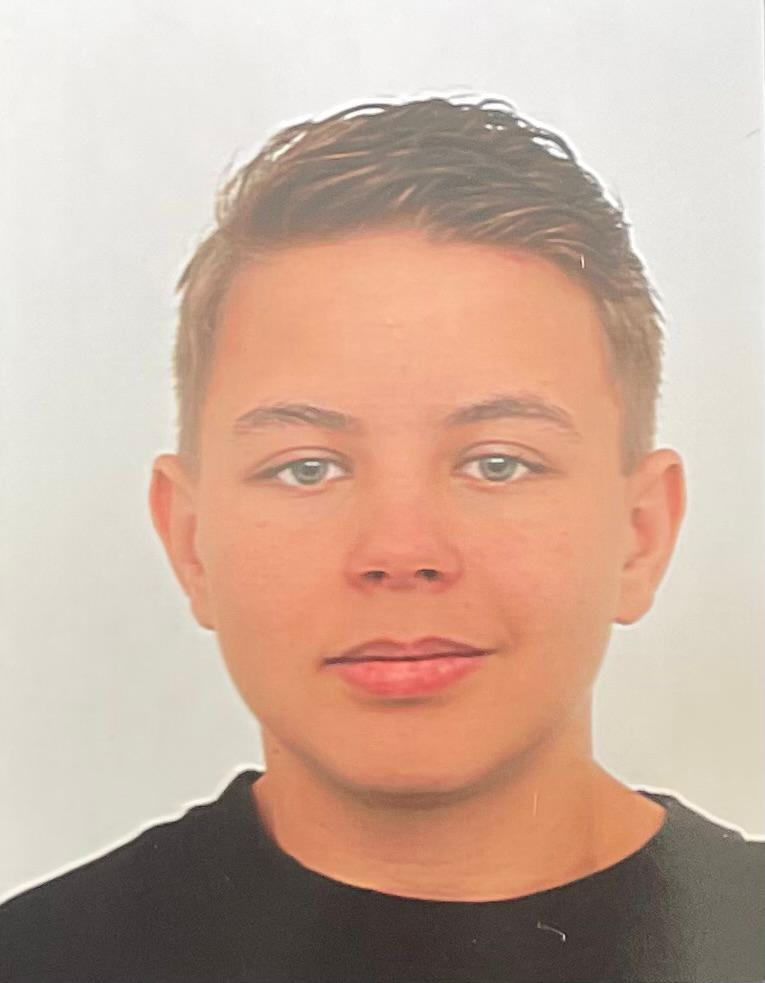

Development Focus
Software development, game projects, practical problem solving, and learning through hands-on work.
Software Development Student
Motivated and reliable software developer in training, with a calm, patient approach and a strong interest in building games, software, and useful digital experiences.

Software developer in training with hands-on work experience.
About
I am Puk Willem Straathof, a motivated and reliable software development student. I work with an honest and patient attitude, and I am naturally calm and reflective while still being social and helpful with others.
I enjoy working as part of a team, bring a good sense of humor to collaboration, and speak both Dutch and English. I am open to developing my skills further and continuing to learn as I grow personally and professionally.
Skills
A simple overview for now, ready to become more specific once your full tech stack and school projects are added.
Software development, game projects, practical problem solving, and learning through hands-on work.
Dutch and English.
Honest, reliable, helpful, social, patient, introverted, and easy to work with.
Skiing, scuba diving, snorkeling, travel, food, and gaming.
Projects
A place for published projects, school assignments, prototypes, and anything else that shows how you build.
Playable game project published on itch.io. This project gives the portfolio a place to highlight game development work, technical notes, screenshots, and release details.
Open on itch.ioAdd another software, school, or personal project here with the goal, your role, the technologies, and what you learned.
Use this space for coursework, a tool, a website, a game prototype, or another project that shows your development style.
CV
Jan 2023 - Jun 2025
Jumbo Supermarket. Started with cleaning responsibilities and later moved into shelf stocking. Left the role after moving from Vlaardingen to Eindhoven.
Aug 2021 - Jun 2025
Lentiz VMBO - Maasland. MAVO-TL theoretical learning pathway; diploma obtained.
Aug 2025 - Jun 2029
SintLucas Eindhoven. Second-year student; diploma not yet obtained.
Contact
Right here are some options to get in contact with me.